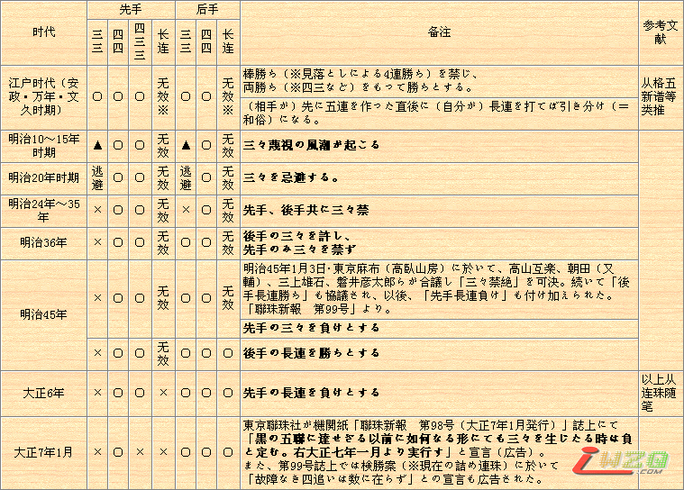
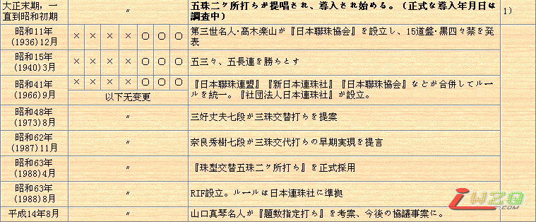

职业连珠规则改革进程
#1 职业连珠规则改革进程 作者：有志青年 发表时间：2007-7-16 12:24:46
五子棋起源于古代中国，发展于日本，风靡于欧洲。大约在我国南北朝时期随围棋一起先后传入朝鲜、日本等地。据日本史料文献介绍，中国古代的五子棋是经由高丽(朝鲜半岛)，于1688年至1704年的日本元禄时代传到日本的。到日本明治32年(公元1899年)，经过公开征名，“连珠”这一名称才被正式确定下来，取意于“日月如合壁，五星如连珠”。以后经过了不断的改良，使五子棋这一简单的游戏复杂化、规范化，而最终成为今天的职业连珠五子棋。主要的规则变化有：
1899年规定，禁止黑白双方走“双三”；
1903年规定，只禁止黑方走“双三”；
1912年规定，黑方被迫走“双三”亦算输；
1916年规定，黑方不许走“长连”；
1918年规定，黑方不许走“四、三、三”；
1931年规定，黑方不许走“双四”，并规定将19×19的围棋盘改为15×15的连珠专用棋盘。
○…胜、×…负


※いわゆる復活三々禁の論争に付いては省略した。
※訂正：四三々がすべての年代に亘って○になっていました。お詫びして訂正申し上げます。
1907年に四三々禁で打たれていた事が資料によって確認されました。引き続き追跡調査しております。
※参考文献
1)《连珠世界·增刊号》2003 50(4) 增刊号 「透过古书的规则变迁历史」
本世纪初五子棋传入欧洲并迅速风靡全欧。1988年8月8日国际连珠联盟(RIF)成立，标志着职业连珠正式成为一种国际比赛棋种。
1988年8月14-16日举行的第26期全日本连珠名人战挑战者决定赛，首先试验采用开局三手可交换，共试验了7年，至1995年第五届世锦赛和第33期名人战才正式采用假先方确定开局型，三手可交换规则。
随着时间的推移，人们发现了自由开局黑棋先行的必胜性，因此，规则的修改大多数是针对黑棋的限制，使棋局更趋向于平衡。三手可交换规则迫使人们放弃了一些一方必胜的开局，如浦月局、花月局、彗星局、游星局、云月局、雨月局等。而五手两打规则的施行，又使某些开局重新被人们加以研究。现行三手交换、五手两打规则的结合，使棋手在开局选择和研究方向上，趋向于寻求强4手下最多有一个必胜的强5点，或至少有两个不败5的那些三手开局。
近年来计算机技术突飞猛进，电脑分析棋局的深入，使可用开局越来越少，出现了“连珠理论浅显，变化少”、“连珠无发展前途”等错误观点，甚至出现了“终结”者，但大多数人要求连珠规则改革的呼声越来越高。
进入21世纪，在欧洲，规则改革已经快步进入了试验阶段，而国内棋友仍在呼吁开放26种开局的限制，解放“天元点”的束缚。
2003年8月爱沙尼亚Karepa公开赛
2005年8月RIF会员大会报告中，RIF决定于2005年12月31日前在RIF规则委员会的专题论坛中收集连珠开局规则的提案，共收到提案30项。
2006年1月15日，RIF规则委员会在ORC召开第一次网络会议。会议由RIF规则委员会主席Ando主持，Mr. Jonsson 为公正人。出席会议的有规则委员会的代表Meritee、Tarannikov、Jonsson，瑞典代表Hermansson、Karlsson，中国RIFChina代表Song Xian，中国上海代表Gu Wei，中国台北代表Tsai Chia-cheng，爱沙尼亚代表Soosyov，Taimla，俄罗斯代表Sushkov，日本代表Yamaguchi、Okabe等共13人。会议讨论了评判开局规则提案的七条原则：
1．新规则不能和现有规则差别太大（改动越小越好）
2．新规则应有比现有规则更多的可下（平衡）变化
3．新规则应对双方公平（没有任何一方有太大的预先分析研究的优势）
4．新规则要让初学者容易理解及使用
5．新规则要包括或者几乎包括现有的所有开局理论
6．开局阶段不能出现在棋盘上太偏远位置上落子的情况
7．第一手落在天元
经过热烈讨论，以上七条基本通过。
2月12日，第二次规则研讨会成功召开。来自瑞典、爱沙尼亚、俄罗斯、中国、中国台湾、日本等国家和地区的代表、国际连珠联盟规则委员会的部分官员等参加了本次会议。会议由国际连珠联盟竞赛规则委员会主席ANDO主持，JOSSON担任会议监督。本次会议依据第一次会议确定的评定新规则的7条标准，对所有31项开局提案进行了评估，除个别代表对第28条规则提案的评分稍有争议外，与会者的观点基本一致。最后，大家一致同意根据打分，去除得分低的23项提案，通过了对得分较高的8条规则(提案5、29、2、31、4、17、9、3)进行审议的提议。
3月5日召开了第三次规则研讨会。与会成员增加了日本的河村典彦和匈牙利的Virag。会议确定在原七条基本原则的基础上，增加一条防止绝对和棋局面作为原则的第八条，并重点讨论了几种提案是是否符合第八条原则。通过激烈的讨论和演示后达成共识：开局提案5、3、4与第八条原则无冲突，提案2很难